The Collector
Teaching With the F.A. Williams Collection
Open a box · then choose an image
What have you learned about Indigenous communities… and how?
Teaching With the F.A. Williams Collection
Open a box · then choose an image
Paper records · 32
How the collection came apart: the Deed of Trust, the 1969 accession record, catalog cards and acquisition photographs.
Go to the Provenance pathway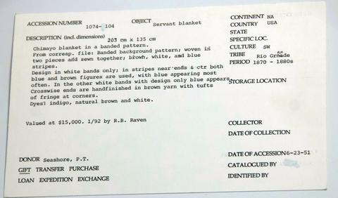
Williams Collection: Catalog Cards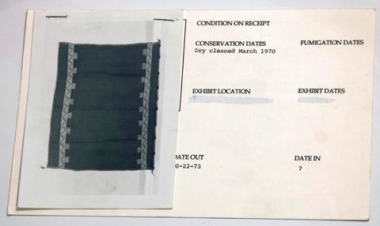
Williams Collection: Catalog Cards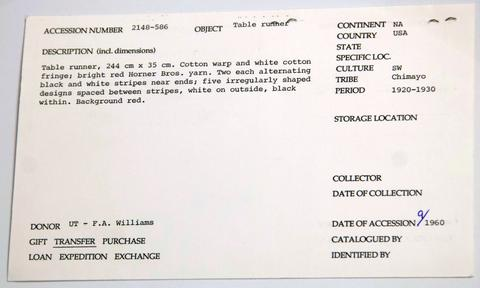
Williams Collection: Catalog Cards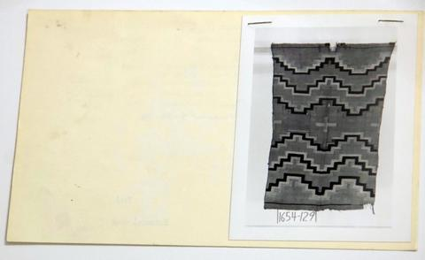
Williams Collection: Catalog Cards Williams Collection: Catalog Cards
Williams Collection: Catalog Cards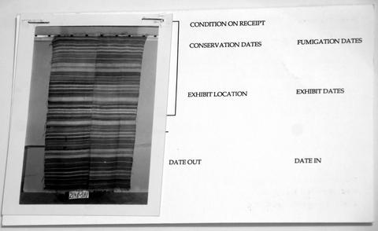
Williams Collection: Catalog Cards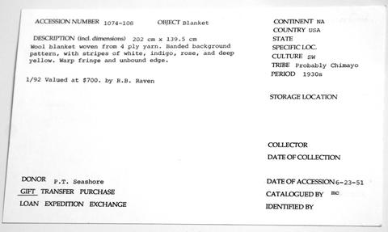
Williams Collection: Catalog Cards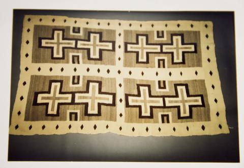
Photos Among Paperwork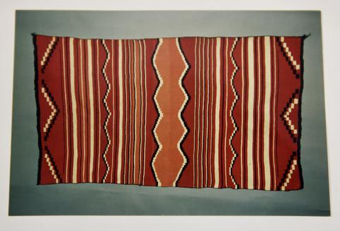
Photos Among Paperwork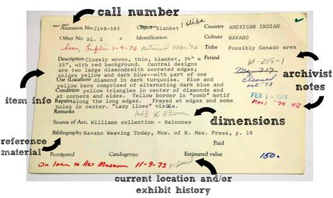
Williams Collection: Catalog Cards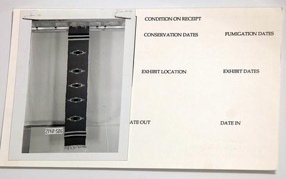
Williams Collection: Catalog Cards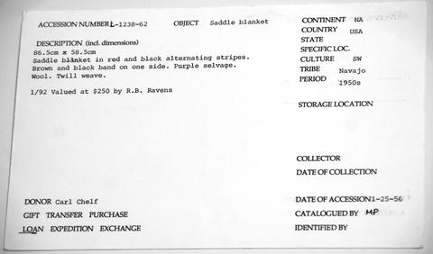
Williams Collection: Catalog Cards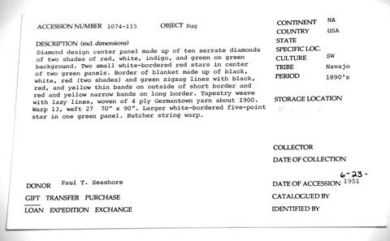
Williams Collection: Catalog Cards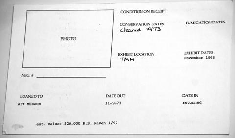
Williams Collection: Catalog Cards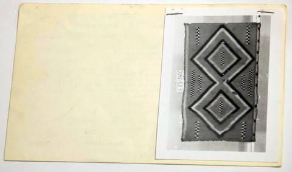
Williams Collection: Catalog Cards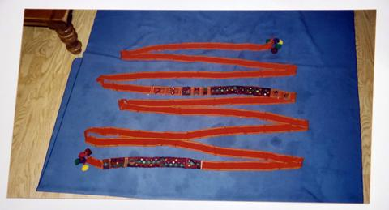
Williams Collection: Catalog Cards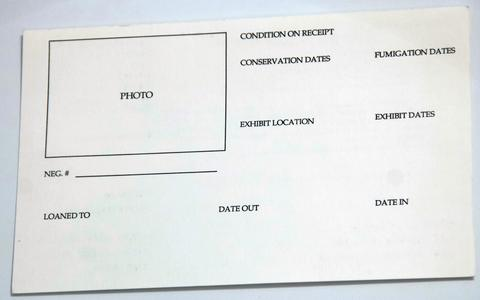
Williams Collection: Catalog Cards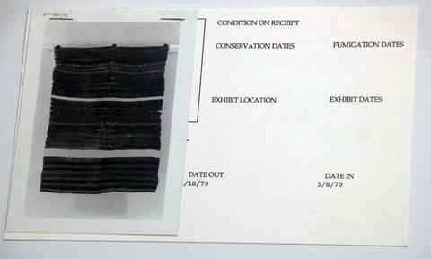
Williams Collection: Catalog Cards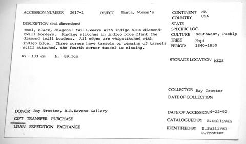
Williams Collection: Catalog Cards Photos Among Paperwork
Photos Among Paperwork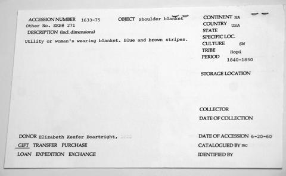
Williams Collection: Catalog Cards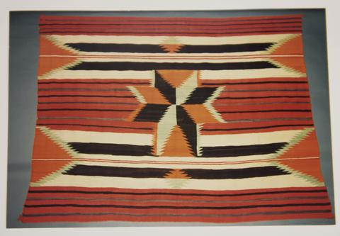
Photos Among Paperwork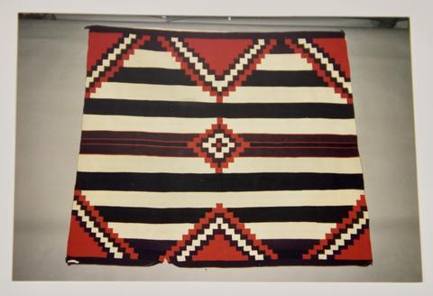
Photos Among Paperwork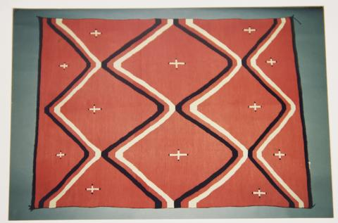
Photos Among Paperwork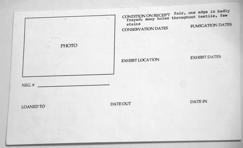
Williams Collection: Catalog Cards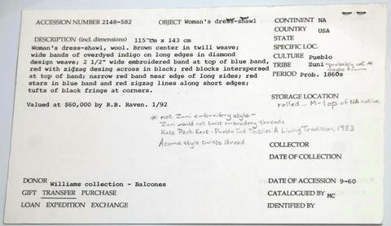
Williams Collection: Catalog Cards Williams Collection: Catalog Cards
Williams Collection: Catalog Cards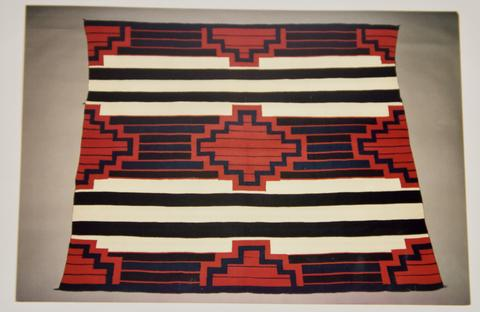
Photos Among Paperwork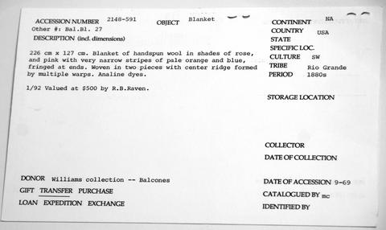
Williams Collection: Catalog CardsTextiles · 16
Diné weaving from the 1860s to the 1950s: Chief blankets, saddle blankets, a shawl, rugs and samplers.
Go to the Textiles pathway Woman's Shawl 2148-586
Woman's Shawl 2148-586 Saddle Blanket 1074-112
Saddle Blanket 1074-112 Child's Blanket 1074-102
Child's Blanket 1074-102 Rug 2148-611
Rug 2148-611 Saddle Blanket 2148-622
Saddle Blanket 2148-622 Blanket 2148-597
Blanket 2148-597 Chief Blanket 2148-593
Chief Blanket 2148-593 Chief's Shoulder Blanket 1074-106
Chief's Shoulder Blanket 1074-106 Saddle Blanket 1633-76
Saddle Blanket 1633-76 Chief Blanket 2148-606
Chief Blanket 2148-606 Shoulder Blanket 1074-114
Shoulder Blanket 1074-114 Chief Blanket 1074-101
Chief Blanket 1074-101 Blanket 2148-612
Blanket 2148-612 Woven Sampler 2148-588
Woven Sampler 2148-588 Rug 1654-131
Rug 1654-131 Blanket 1654-129
Blanket 1654-129Photographs · 28
Williams's lantern slides and lecture ephemera from the Harry Ransom Center.
Go to the Photography pathway Studio 1940
Studio 1940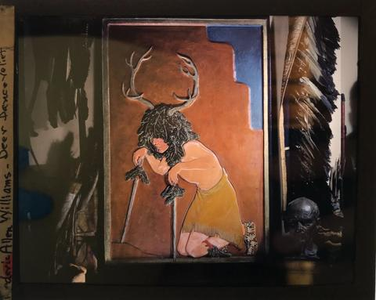
Deer Dance Relief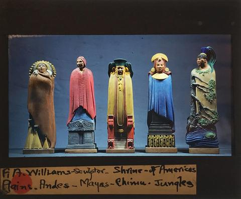
Shrine of the Americas: Plains – Andes – Mayas – Chimú – Jungles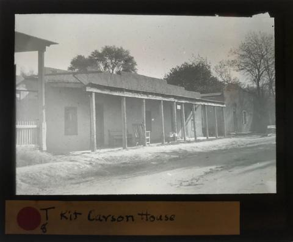
Kit Carson House (in Taos)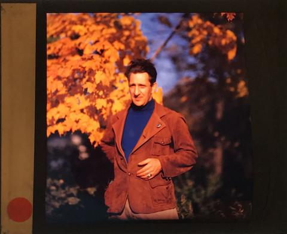
[Portrait of Williams in autumn] The Arrowmaker
The Arrowmaker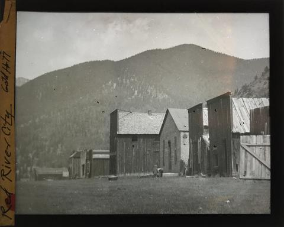
Red River City – Gold Hall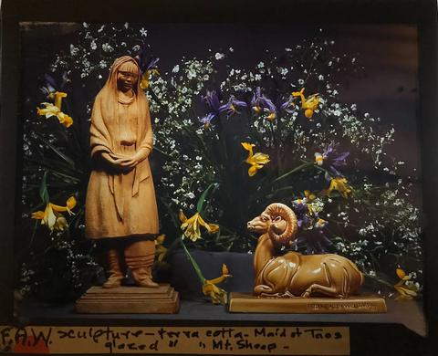
Maid at Taos – Glazed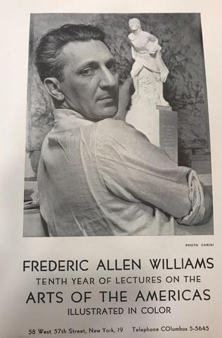
[Brochure cover: "Frederic Allen Williams, Tenth Year of Lectures on the Arts of the Americas, Illustrated in Color"]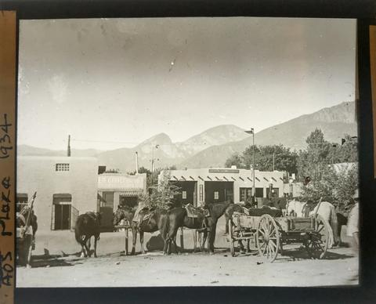
Taos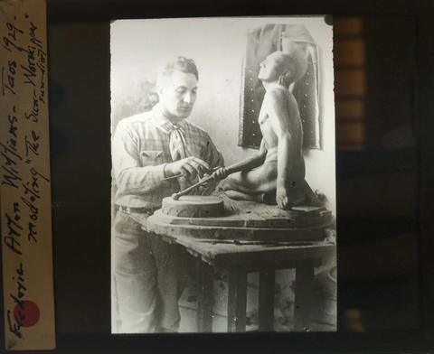
Taos 1929-Modeling ‘The Sioux Worshipper' sun dial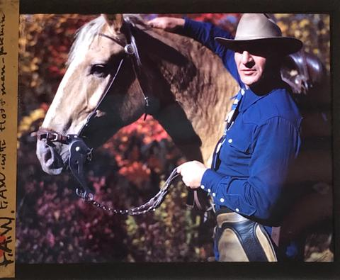
With Hoffmann-palaniun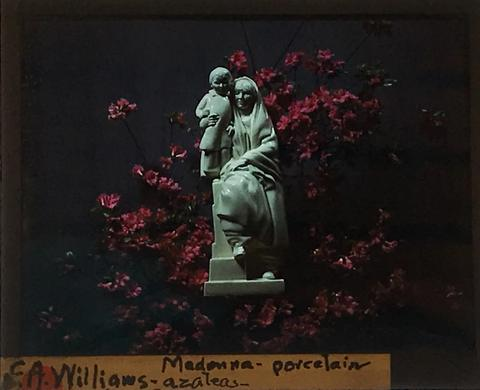
Madonna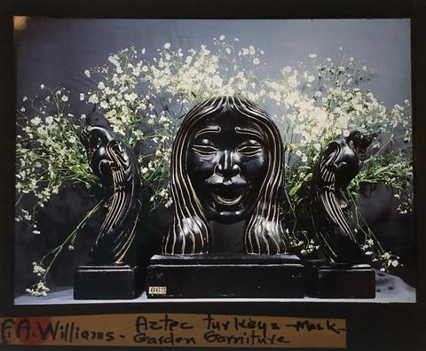
Aztec Turkeys – mask – Garden Garniture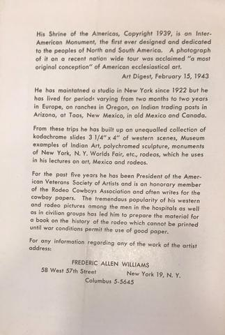
[Brochure page: the Shrine of the Americas and Williams's Kodachrome slide collection][Brochure page: "Solidarity of the Americas"]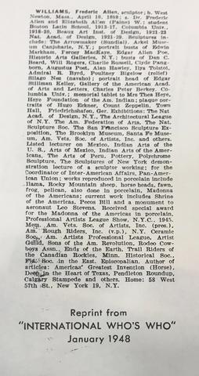
[Reprint from "International Who's Who," January 1948]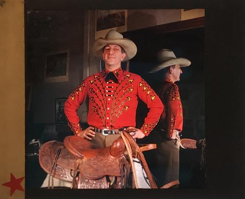
[Williams in an embroidered western shirt with a saddle]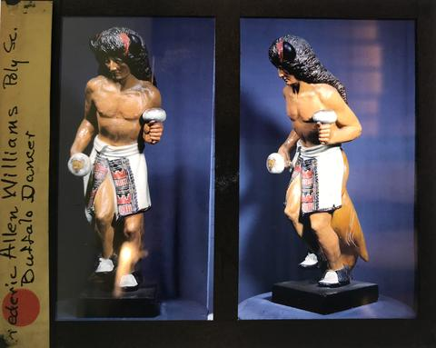
Buffalo Dancer Studio 1940
Studio 1940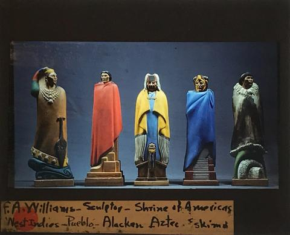
Shrine to Americas: West Indies-Pueblo-Alacken-Aztec-Eskimo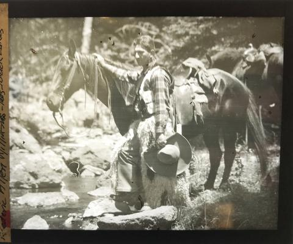
Black Lakes (near Taos)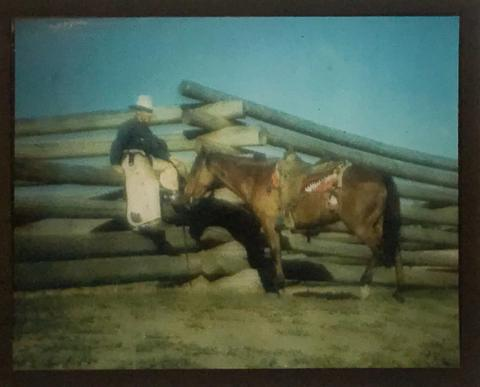
[Williams with a horse at a log fence][Brochure page: lecture descriptions and press notices]Maid of Taos